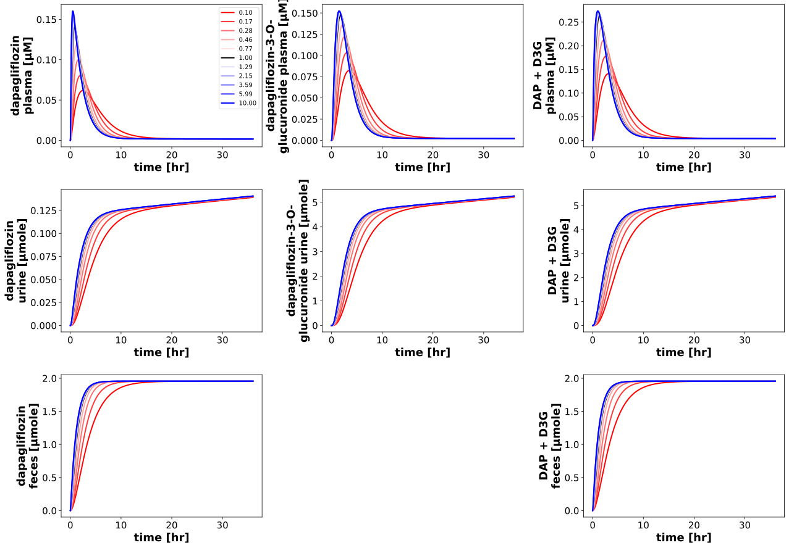

FoodEffect
Models
Datasets
Figures
- Fig_GU__f_absorption_pk: FoodEffect_Fig_GU__f_absorption_pk.svg
- Fig_GU__f_absorption_pd: FoodEffect_Fig_GU__f_absorption_pd.svg
{kind=link}
Fig_GU__f_absorption_pk
|  |
Fig_GU__f_absorption_pd

|
Code
../../../../experiments/misc/food_effect.py
from copy import deepcopy
from typing import Dict
import numpy as np
import matplotlib
from sbmlsim.plot import Axis, Figure, Plot
from sbmlsim.simulation import Timecourse, TimecourseSim
from pkdb_models.models.dapagliflozin.experiments.base_experiment import (
DapagliflozinSimulationExperiment,
)
from pkdb_models.models.dapagliflozin.helpers import run_experiments
class FoodEffect(DapagliflozinSimulationExperiment):
"""Tests parameter effects (DDI)."""
ddi_parameters = [
'GU__f_absorption',
]
ddi_names = {
'GU__f_absorption': 'Absorption rate',
}
parameter_values = sorted(np.logspace(start=-1, stop=1, num=10).tolist() + [1.0]) # [0.01, 100]
def simulations(self) -> Dict[str, TimecourseSim]:
Q_ = self.Q_
tcsims = {}
for parameter in self.ddi_parameters:
for value in self.parameter_values:
tcsims[f"dap_{parameter}_{value}"] = TimecourseSim(
Timecourse(
start=0,
end=36 * 60, # [min]
steps=4000,
changes={
**self.default_changes(),
f"PODOSE_dap": Q_(5, "mg"),
parameter: Q_(value, "dimensionless")
},
)
)
return tcsims
@staticmethod
def get_color(v: float, scale="log", vmin=0.01, vmax=100):
"""Get color for value."""
cmap = matplotlib.colormaps.get_cmap("seismic_r")
if np.isclose(v, 1.0):
color = "black"
else:
if scale == "linear":
cvalue = (v - vmin) / np.abs(vmax - vmin)
elif scale == "log":
cvalue = (np.log10(v) - np.log10(vmin)) / np.abs(np.log10(vmax) - np.log10(vmin))
color = cmap(cvalue)
return color
def figures(self) -> Dict[str, Figure]:
return {
**self.figures_pk(),
**self.figures_pd(),
}
def figures_pk(self) -> Dict[str, Figure]:
figures = {}
for parameter in self.ddi_parameters:
fig = Figure(
experiment=self,
sid=f"Fig_{parameter}_pk",
num_rows=3,
num_cols=3,
name=f"Effect: {self.ddi_names[parameter]} ({parameter})",
)
plots = fig.create_plots(xaxis=Axis("time", unit="hr"), legend=True)
sids = [
# plasma
"[Cve_dap]",
"[Cve_d3g]",
"[Cve_daptot]",
# urine
"Aurine_dap",
"Aurine_d3g",
"Aurine_daptot",
# feces
"Afeces_dap",
None,
"Afeces_daptot",
]
for ksid, sid in enumerate(sids):
if not sid:
continue
plots[ksid].set_yaxis(label=self.labels[sid], unit=self.units[sid])
for value in self.parameter_values:
plots[ksid].add_data(
task=f"task_dap_{parameter}_{value}",
xid="time",
yid=sid,
label=f"{value:.2f}",
color=self.get_color(v=value),
)
figures[fig.sid] = fig
return figures
def figures_pd(self) -> Dict[str, Figure]:
figures = {}
for parameter in self.ddi_parameters:
fig = Figure(
experiment=self,
sid=f"Fig_{parameter}_pd",
num_rows=2,
num_cols=3,
name=f"Effect: {self.ddi_names[parameter]} ({parameter})",
)
plots = fig.create_plots(xaxis=Axis("time", unit="hr"), legend=True)
sids = [
"KI__UGE",
"KI__RTG",
"[KI__glc_ext]",
]
for ksid, sid in enumerate(sids):
plots[ksid].set_yaxis(label=self.labels[sid], unit=self.units[sid])
for ksid, sid in enumerate(sids):
for value in self.parameter_values:
# simulations
plots[ksid].add_data(
task=f"task_dap_{parameter}_{value}",
xid="time",
yid=sid,
label=f"{value:.2f}",
color=self.get_color(v=value),
)
for ksid in range(3, 6):
plots[ksid].set_xaxis(label=self.label_dap_plasma, unit=self.unit_dap)
plots[3].set_yaxis(label="Rate glucose excretion", unit="mmole/min")
plots[4].set_yaxis(label=self.label_rtg, unit=self.unit_rtg)
plots[5].set_yaxis(label=self.label_uge, unit=self.unit_uge)
for value in self.parameter_values:
color = self.get_color(v=value)
# simulations
plots[3].add_data(
task=f"task_dap_{parameter}_{value}",
xid="[Cve_dap]",
yid="KI__GLCEX",
label=f"{value:.2f}",
color=color,
)
plots[4].add_data(
task=f"task_dap_{parameter}_{value}",
xid="[Cve_dap]",
yid="KI__RTG",
label=f"{value:.2f}",
color=color,
)
plots[5].add_data(
task=f"task_dap_{parameter}_{value}",
xid="[Cve_dap]",
yid="KI__UGE",
label=f"{value:.2f}",
color=color,
)
figures[fig.sid] = fig
return figures
if __name__ == "__main__":
run_experiments(FoodEffect, output_dir=FoodEffect.__name__)